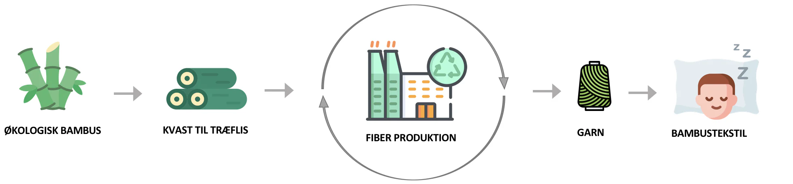

OFTE STILLEDE SPØRGSMÅL
Hvad er det bedste bambus sengetøj?
⌄
Når det kommer til at vælge det bedste sengetøj af 100% bambusviskose, er der flere faktorer, der spiller ind. Produktionsmetoder, kvalitet og holdbarhed er nogle af de vigtigste ting at tage med i overvejelserne når man går på jagt efter et nyt sæt sengetøj. Vi prøver at dykke lidt ned i, hvorfor vi mener, at bambussengetøj fra Wonder Living er det bedste valg.
Produktionsmetode (fiberkvalitet)
Det bedste bambussengetøj er fremstillet af 100% bambusviskose efter Lyocell-metoden (Wonder Living). Undgå blandinger med bomuld eller syntetiske fibre, da de kan modvirke de naturlige fordele ved bambus. Det mest udbredte bambustekstil er 100% bambusviskose produceret efter den traditionelle viskose-metode og går under handelsnavnet Rayon. I denne metode bruges der skrappe kemikalier, som ikke kan genanvendes, og selve processen kræver mere vand og strøm, hvilket har en større belastning på miljøet end lyocell-metoden.Derfor anses denne metode ikke for at være særlig miljøvenlig og kvaliteten og holdbarheden kan heller ikke måle sig med Lyocell-metoden.
Fordele ved Lyocell-metoden
Europæisk prisvindende system
Bambussen bliver opløst i et non-toxic organisk opløsningsmiddel
Produktionen sker i et lukket kredsløb
Genbruger op til 99% af restkemikalierne til næste produktion
Mindre energikrævende produktion
Skaber en højere fiberkvalitet
Et mere miljøvenligt alternativ
“Ulempen” ved Lyocell-metoden
Det organiske opløsningsmiddel (NMMO) kan ikke kaldes økologisk (alternativer findes ikke). Læs mere om produktion af bambustekstiler
Hvad er bambus lyocell?
⌄
Der findes to forskellige metoder til at fremstille bambustekstiler på.
Den bæredygtige lyocell-metode og den konventionelle rayon-metode.

Fremstillingen af bambusfiberen har afgørende betydning for kvaliteten og ikke mindst det miljømæssige aspekt, selvom bambus er en bæredygtig græsart i sig selv. Bambus er et meget hårdt materiale og har derfor behov for at gennemgå en blødgøringsproces, da det ellers ganske enkelt vil knække, eller føles som at ligge med hø. Nedbrydningsprocessen, som kort sagt går ud på at nedbryde og omdanne bambussen til en rå cellulose (100 % viskose af bambus).
Lyocell-metoden er udviklet af den schweiziske fabrikant Lenzing, som har patent på at omdanne trækvas fra bøgetræer og sydafrikanske eukalyptustræer om til stof (Tencel®) i et lukket kredsløb, hvor hele 99,7% af alle rester fra nedbrydningsprocessen bliver genanvendt. Denne proces er ligeledes mindre energikrævende end mange andre.
Lyocell-metoden kan dermed kaldes for mere miljøvenlig, modsat den konventionelle metode, hvor intet fra nedbrydningsprocessen bliver genanvendt. I lyocell-metoden anvendes et organisk opløsningsmiddel methylmorpholin N-oxid (NMMO) til ekstraktion af cellulose fra bambus. Bambusfibrene har med denne metode også en højere vådstyrke, hvilket betyder at det endelige resultat, vil være af en bedre kvalitet.
Wonder Living er en af nordens første udbyder af bambussengetøj, bambusdyner samt andre tekstiler, som er produceret efter lyocell-metoden.
Fordele ved Lyocell metoden
Bambussen bliver opløst i et non-toxic organisk opløsningsmiddel
Processen foregår i et lukket kredsløb og genbruger restkemien (99,7%)
Mindre energikrævende
Højere fiberkvalitet
Europæisk prisvindende system
Ulemperne ved den konventionelle metode
Bambussen bliver opløst i stærke kemikalier som kaudisk soda og svovlsyre.
Processen er mere energikrævende end lyocell-metoden
Store mængder restkemikalier som ikke genanvendes
Kvaliteten er ringere end ved lyocell-metoden
Hvilken type bambus bruges til tekstiler?
Der findes over 1.000 forskellige arter af bambus. I Danmark kender vi bambus som en lille græsart, som vokser i naturen og bliver op til to meter høje med en diameter på 2-3 cm. I det asiatiske tropeklima i Japan og i det nordlige Kina vokser arten moso bambus, som er den type bambus som bruges til tekstilproduktion. Denne bambusart kan blive 28 meter høj, og vokse op til 1 meter om dagen og har en diameter ca. 30 cm. Bambus er en bæredygtig råvare i sig selv, da moso bambus vokser naturligt med kun sollys og regnvand og uden brug af giftige pesticider, herbicider eller kunstgødning. Faktisk har denne type bambus evnen til at absorbere store mængder af CO2 (2-3 gange mere end træer på samme areal), som er med til at sænke drivhuseffekten til fordel for kloden.
Wonder Living anvender kun 100% økologisk Moso bambus til produktionen.
Selvom det færdige bambustekstil er produceret efter lyocell-metoden og økologisk bambus anvendes, kan det færdige produkt ikke kaldes for 100% økologisk (undersøgt hos Teknologisk institut og DMOGT), da alle bambustekstiler er kemisk fremstillet.
Der bruges et organisk opløsningsmiddel til at omdanne bambussen (i lyocell-metoden) og ligeledes bruges der reaktive farvestoffer, som er den type farvestof, som binder bedst til bambustekstilet, for at hindre tekstilet i at falme under vask.
OEKO-TEX® standard 100
Wonder Living certificeret med OEKO-TEX® standard 100, hvilket er din garanti for at det færdige produkt er testet 100% fri for sundhedsskadelige stoffer. Derfor er alle vores produkter allergivenlige.